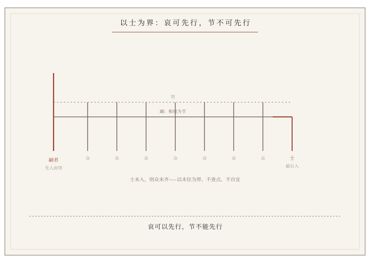

檀弓上 · 三·一百二十 · 第 323 课
士备入而后朝夕踊。
说什么事：国君之丧，群臣朝夕哭踊。嗣君孝子先入即位而哭，必待诸臣尽入列位，才一齐踊。士最卑，最后入，故以「士备入」为齐之标志。
落在哪一层：以「末位」量齐。论「哀可以先行，节不能先行」。
为何编在此位：卷八至此收束。三百一十四课论量人之尺，此课论量众之尺——齐。
【经】士備入而後朝夕踴。
【注】備猶盡也。國君之喪，嫌主人哭，入則踴。
【疏】此一节论君丧，群臣朝夕哭踊之事。备，尽也；国君丧，群臣则朝夕即位哭踊；嗣君孝子虽先入即位哭，必待诸臣皆入列位毕后，乃俱踊者也；士卑最后，故举士入为毕也；所入有前后，而相待踊者，孝子哀深，故前入也，踊须相视为节，故俟齐也。
备 注「备犹尽也」。尽者，列位毕。
踊 哭时顿足，哀之极。踊有节。
朝夕踊 朝夕哭之时皆踊。
主人 嗣君，丧主。
俟齐 等待众人齐同。
士都入列之后，才朝夕一齐踊。
此节一句话，注疏各一段。要点在三处：先入、后踊、以士为齐。
嗣君先入，因为哀深，等不得；但他要等诸臣尽入才踊，因为踊须相视为节。士最卑，最后到，故以士之到为「齐」的标志。
于是全章最精的一句出现了：哀可以先行，节不能先行。
第一层 「备」是齐的标志，取最卑者为界 齐不必数人头，也不必由尊长宣布。取最卑者一人之到，为全众之齐。
这是一个极巧的制度设计：以末位为界，则不必查点，不必宣布，人人自知——士未到，则众未齐。今人以「最高者到」为齐，古礼以「最卑者到」为齐。前者等人，后者等事。
第二层 「踊须相视为节」 踊不是各哭各跳，是一群人的动作同步。同步靠什么？靠「相视」。
礼在这里承认了一个事实：齐不是命令出来的，是看见彼此才有的。故礼之节，一半在制度，一半在目。
第三层 「哀深故前入」：允许早到，不允许早动 嗣君先入即位而哭，是情；必待士备入而后踊，是节。
礼对情的态度，不是压，是「给它一个先行的余地」，同时留住「节的门槛」。你可以先哭，不可以先跳。这一条今日犹可用：急难之时，容人先动情，不容人先乱序。
第四层 举士以见众 经不举公卿，不举大夫，只举士。何故？疏「士卑最后，故举士入为毕也」——取最末一端以概全体。
这是《春秋》笔法之一种：举其最卑者，则尊者自明。三百一十四课「举疏以见亲」，此课「举卑以见众」，同一手法。
与今日何干 今人开会等领导，众人先到，领导后至，以领导之到为齐。此节反过来：嗣君先到，众人后齐，以最末一位之到为齐。
礼的秩序，不在于谁先，在于「以什么为齐」。以尊为齐，则众待一人；以卑为齐，则一人待众。二者所养的，是两种不同的组织。
| 左 | 右 |
|---|---|
| 备 | 尽，列位毕 |
| 士最后入 | 为齐之界 |
| 嗣君先入 | 哀深 |
| 待士备入而后踊 | 节不能先行 |
| 相视为节 | 齐由目成 |
| 举士 | 举卑以见众 |
| 国君之丧 | 限此一等 |
画一处寝宫阶前，视点平视。阶上一人（嗣君）已立，只画衣与背影，面向阶下；阶下众人列成两排，皆衣素，最后一排最右尚缺一位，空处留白。众人皆侧身相视（以头向示意，不画人面）。不写文字。赭色只用在阶上那人衣摆一道，与阶沿一道线。
